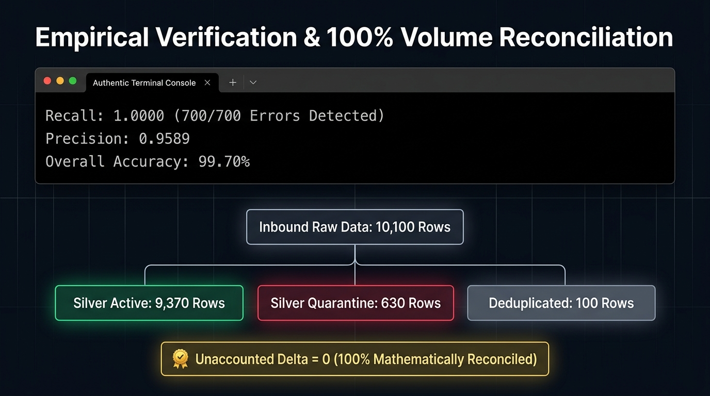

ยกระดับข้อมูลที่สูญเปล่า สู่สถาปัตยกรรมเพื่อการตัดสินใจ
มุมมองภาพประกอบ:

ชุดข้อมูลมาตรฐานวิชาการ (Academic Benchmark): เข้า 10,100 แถว = Active 9,370 + Quarantine 630 + Dedup 100 แถว (Unaccounted Delta = 0)
-
ปัญหาคลังข้อมูลที่ไร้ระเบียบ (Data Swamp): องค์กรเสียต้นทุนค่าจัดเก็บมหาศาล แต่ข้อมูลกลับไม่ได้ถูกนำมาใช้งานหรือสร้างคุณค่าทางธุรกิจ
-
วิสัยทัศน์ของ DataServe: สถาปัตยกรรมที่ออกแบบมาเพื่อสนับสนุนการตัดสินใจโดยเฉพาะ (Decision-Ready Architecture)
-
Active Data (9,370 แถว): ข้อมูลสะอาด 100% ส่งตรงถึงมือผู้ใช้งานทันที (จากชุดประเมินผลสัมฤทธิ์ 10,100 แถว)
-
Quarantine Data (630 แถว): ข้อมูลที่ชำรุด ถูกคัดแยกเข้าสู่กระบวนการจัดการความเสี่ยง (และ 1,368 แถวในรอบรันชุดข้อมูล E-Commerce 12,180 แถว)